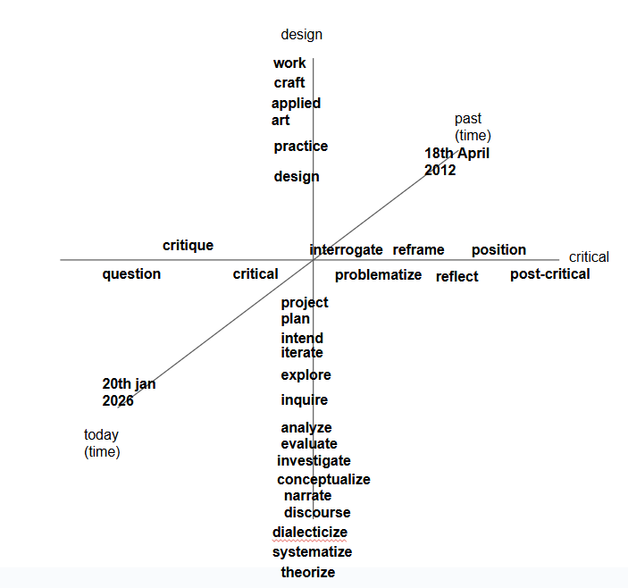

During my time at the Design Academy, I often heard the words "critical" and "design" used together, yet the actual meaning of their combination felt unclear to me. Instead of trying to resolve this ambiguity, I chose to embrace the diversity of approaches within critical design, its links to other fields, and the connections between them. By offering this tool, I hope to create a space where students can orientate themselves and navigate critical design in their own way.
CR!T is an online tool for exploring critical design through language. It invites design students to notice relationships between words and practices as they move across the web. The platform encourages active reflection and discovery, showing what critical design does through interaction.
Using a chrome extension, students toggle between the web and an online platform where collected sentences come together. Through color coding and spatial arrangement, patterns and relationships begin to emerge. In this way, language becomes a tool to collectively uncover patterns and relationships.
CR!T maps critical design by placing sentences from selected online sources into a 3D-landscape. A sentence is included when it contains at least one keyword associated with a critical practice and one keyword associated with a design practice. This means that every sentence in the landscape represents an intersection between ways of being critical, ways of designing, and a moment in time.
The landscape is structured along three axes:
X-axis: Critical practices
Y-axis: Design practices
Z-axis: Date of publication

The X- and Y-axes are composed of discrete positions. Each position represents a specific mode of engagement. On the critical axis, these range from questioning, critique and post-critical approaches. On the design axis, practices span from making and working, to inquiry and theorization. The order of these practices along the axes is a design decision. It does not imply hierarchy, progress, or value, but reflects different ways critical design can be enacted and articulated.
This ordering is intentionally open to critique: practices could be grouped differently, reordered, merged, or split, and doing so would produce a different landscape.
Keywords are expanded through lemmatization, meaning that different forms of the word are included. For example, critical also accounts for critically, criticality, criticize, criticized, and criticizing. This allows CR!T to register language as it appears in practice, rather than limiting it to fixed or idealized terms.
At the same time, this process raises questions about equivalence, simplification, and what is lost when language is grouped.
The Z-axis represents time, positioning sentences according to their year of publication. This temporal dimension makes it possible to observe shifts in language and critical design practice.
You can explore the landscape via:
Rotating: right click + drag
Zooming: scroll wheel
Pan: left-click + drag
Sentences appear where critical- and design practices, as well as dates intersect, allowing relationships to become spatial. A drawing layer can be activated to mark sentences, draw connections, or leave notes directly in the landscape. This turns the visualisation into a space for interpretation rather than a fixed representation.
Toggle drawing: D
Draw line: Click 2 points
Toggle text mode: T
Place text: click location
Clear all drawings: C
You are invited to be critical of what you see: the choice of keywords, the ordering of the keywords on the axes, the sources included, and which voices or forms of language might be hidden or not included.
(In the future) You can suggest new keywords, which appear in a different font to distinguish them from the original vocabulary and make visible how the system evolves. CR!T is not a neutral overview of critical design. It is a situated tool, currently based on sources from educational and cultural institutions in the Netherlands, shaped by my research process, readings, and interviews.